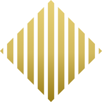

DAILY OPERATIONS

ONCHAIN OPERATIONS
KGLD Daily Dashboard
KGLD 온체인 운영 상태를 우선 모니터링하고, 금 토큰·RWA 시장과 관련 뉴스에서 파생되는 참고 인사이트를 함께 제공합니다.
Primary: KGLD operations monitoring · Secondary: market and RWA intelligence
PRIMARY · KGLD OPERATIONS
KGLD Operations ?
KGLD는 지금 정상인가? 운영자가 오늘 확인할 것은 무엇인가?
SUPPLY CUSTODY ?
Issue 보관 ?
Redeem 잔액 ?
Issue 컨트랙트가 발행 자산 보관 및 배포 대기 물량을 관리하는 구조입니다.
SNAPSHOT
핵심 지표
SUPPLY
공급 분포 ?
Total KGLD
OPERATIONS
컨트랙트 활동
MONITOR
위험 모니터
TRANSACTION FEED
최근 거래
SECONDARY · MARKET & RWA INTELLIGENCE
Market & RWA Intelligence ?
외부 시장 데이터는 KGLD 컨트랙트 정상 여부가 아니라 사업·콘텐츠 의사결정을 위한 참고 정보입니다.
MARKET INTERPRETATION
Market Interpretation ?
Last generated: pending
TOKENIZED GOLD SIGNAL
Tokenized Gold Signal ?
RWA OPPORTUNITY MAP
RWA Opportunity Map ?
EXTERNAL SIGNAL TREND
External Signal Trend ?
CONTENT OPPORTUNITIES
Content Opportunities ?
오늘 실제로 활용할 수 있는 메시지와 작성 도구를 제공합니다.
WRITING DESK